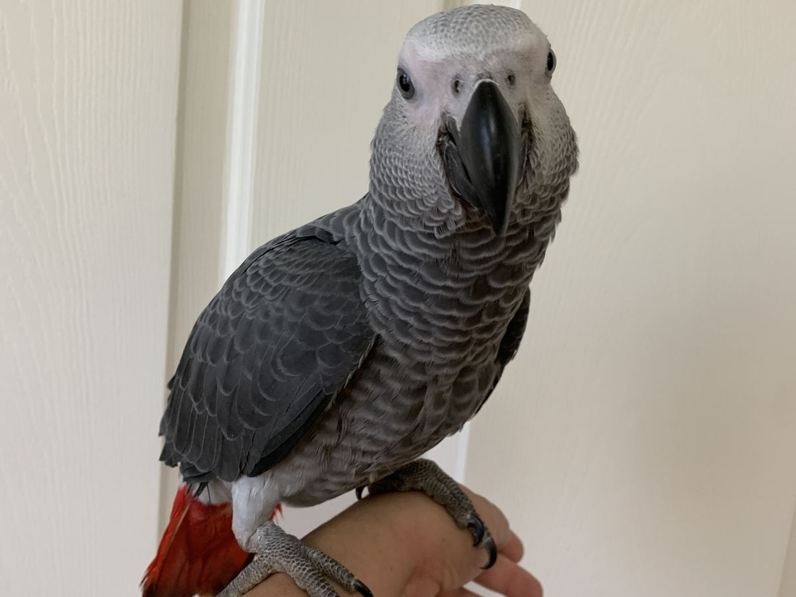
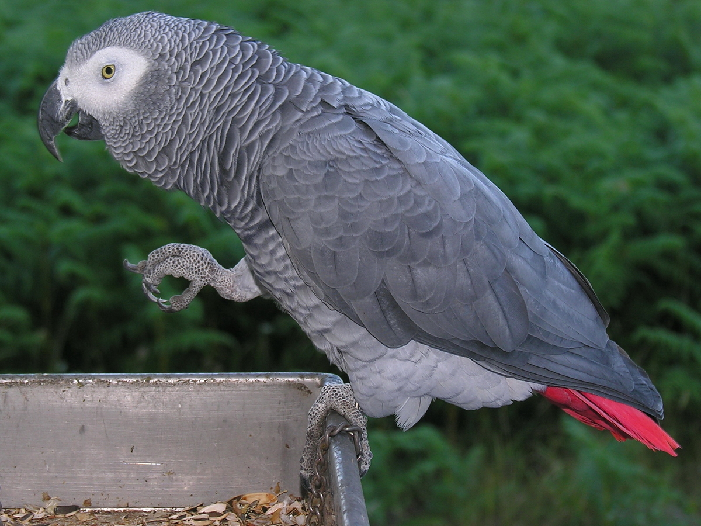
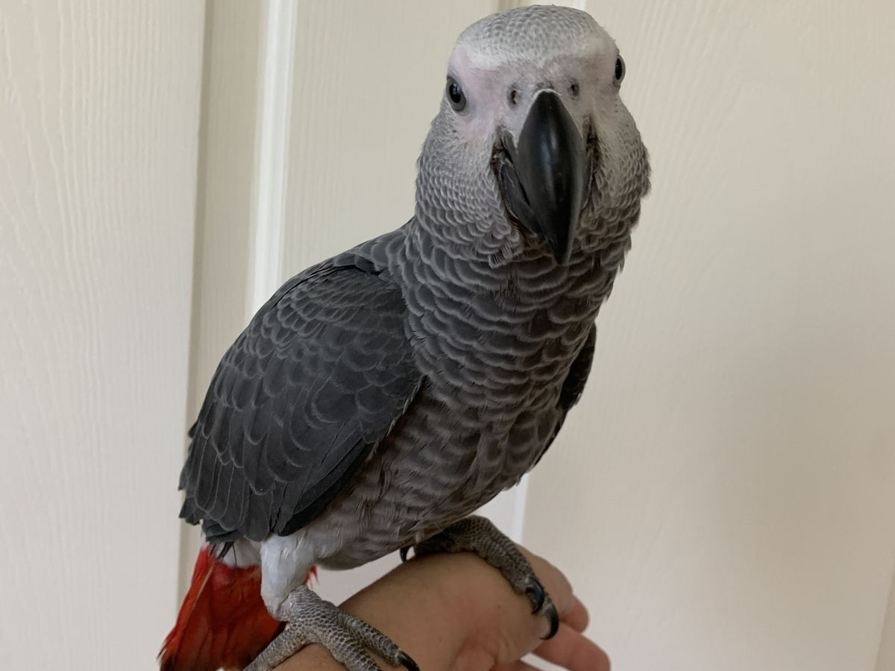
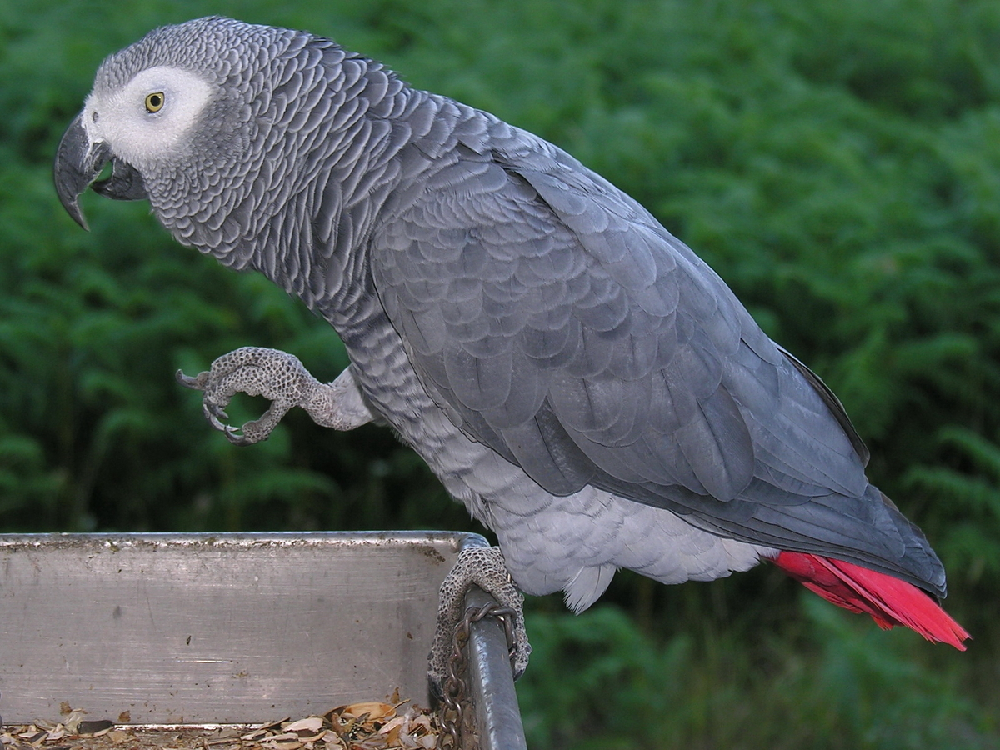

Edi
Jedini je papagaj koji može izgovoriti rečenice sa smislom (npr. da pozdravi vlasnika kad uđe u stan). U mogućnosti je da logički povezuje reči u rečenice i upotrebi ih u pravo vreme. Sintagme kao što su „Dobar dan“ ili „Dobro veče“ izgovoriće baš u momentu kada je zaista dan, odnosno veče. Po intelektu je dokazano da su žako papagaji na nivou petogodišnjeg deteta, a po nekim podacima može da nauči da oponaša i do 800 reči što ga svrstava među najintligentnije životinje. Uz pravilnu negu, održavanje i ishranu ova vrsta papagaja može da živi preko 60 godina. Žako spada u velike papagaje.
 


